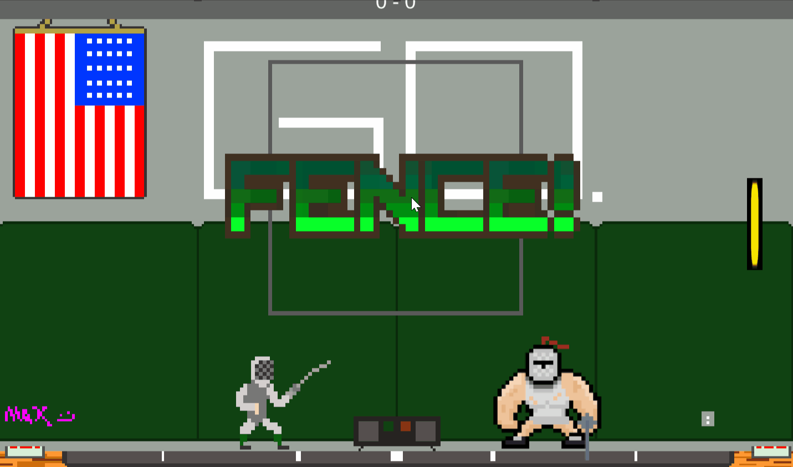

EN GARDE
> Punch-Out inspired fencing action
En Garde is a 2D fencing action game inspired by Punch-Out!!-style boss encounters, developed in Unity using C#. The project focuses on timing-based combat, pattern recognition, and reactive enemy AI built around readable yet punishing attack behaviors. As Lead Programmer, I implemented core gameplay systems including player input buffering, hit detection, and enemy state machines that govern attack patterns and behavioral escalation across encounters. The combat system was designed around precise responsiveness and clarity, ensuring that attacks, parries, and dodges are immediately readable and consistent in execution. Emphasis was placed on tight input handling and deterministic combat outcomes to maintain a strong sense of control and fairness despite minimal control complexity. The final result is a mechanically focused combat prototype centered on timing, readability, and progressively complex encounter design.

Core combat framework built around timing-based fencing mechanics. Handles player input buffering, attack commitment windows, parry detection, and hit validation using frame-accurate state transitions to ensure responsive and deterministic combat outcomes.
Enemy behavior system driven by hierarchical state machines controlling attack selection, telegraphing, and escalation patterns. Designed to produce readable but progressively complex opponent behavior that adapts across encounter phases.
Player readability layer responsible for visual and timing feedback during combat interactions. Includes attack telegraphs, hit confirmations, and parry/dodge indicators to ensure clear communication of game state at all times.
- > Unity (Game Engine)
- > C# (Primary Language)
- > Git & GitHub (Version Control)